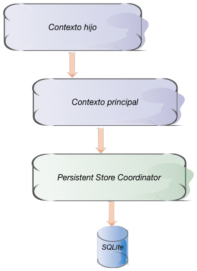

Contextos anidados
Contextos anidados¶
El contexto de persistencia está conectado con un Persistent Store Coordinator, cuyo trabajo, como su propio nombre indica, es el de gestionar el almacenamiento persistente. Cuando almacenamos un objeto haciendo save del contexto, es el store coordinator el que se encarga de "pelearse" con la base de datos SQLite (o con el almacenamiento que sea). Cuando tenemos varios contextos, típicamente están todos "conectados" con el mismo coordinator. Este es el esquema más típico en aplicaciones iOS.
En iOS5 se introdujo la posibilidad de tener un contexto "conectado" con otro en lugar de con un coordinator. Esto se conoce también como contexto hijo. El hijo está "conectado" con el padre y el padre es el "conectado" al coordinator. Cuando desde el hijo se hace un save no se están guardando los datos en el almacenamiento persistente, sino en el contexto padre. Los objetos guardados desde el contexto hijo son "pendientes de guardar" para el padre. Es decir, es una operación puramente en memoria. Para guardarlos en el almacenamiento persistente el padre también tendría que hacer save.

Cuando un contexto está "conectado" a un "persistent store coordinator" fijamos el valor de su propiedad persistentStoreCoordinator. Para indicar que está conectado a otro contexto "padre" fijamos el valor de parent
1 2 3 4 5 6 | let contextoPadre = NSManagedObjectContext(concurrencyType: .mainQueueConcurrencyType) //El padre está conectado a un "persistent store coordinator" contextoPadre.persistentStoreCoordinator = ... let contextoHijo = NSManagedObjectContext(concurrencyType: .mainQueueConcurrencyType) //El hijo está conectado al padre contextoHijo.parent = contextoPadre |
¿Para qué sirve anidar contextos?. Típicamente se suelen describir dos casos de uso distintos: usar el contexto hijo como un "borrador" para realizar operaciones que podemos descartar en cualquier momento, y como una forma de hacer save en background.
Veamos el primero de los usos. Pensemos en una aplicación que tenga una pantalla de edición de datos que implique la creación y relación entre sí de varios objetos. Por ejemplo si estamos editando un pedido de una tienda online tendremos varias entidades implicadas como Pedido, Item, etc. Si en un momento dado el usuario se "arrepiente" de hacer el pedido y quiere cancelarlo debemos ser capaces de poder eliminar todas las entidades que hemos creado en el proceso, y los cambios que hayamos hecho en las existentes. Los contextos anidados nos dan la posibilidad de implementar esta funcionalidad de forma muy sencilla: lo único que tenemos que hacer es crear todas estas entidades y hacer las modificaciones en un nuevo contexto hijo del principal. Para guardar los cambios que hagamos en ese contexto, haremos save en él y luego también en el principal. Si por el contrario queremos anular lo hecho en el contexto hijo en realidad no hace falta hacer nada especial. Simplemente no nos molestamos en hacer el save del padre.
En el segundo caso, queremos hacer un save de los datos en background. Lo que tenemos que hacer es tener dos contextos en la aplicación. El padre usará una cola de operaciones de tipo "privado" (es decir, distinta a la principal) mientras que el hijo usará la cola principal de operaciones. Cuando realicemos el save del hijo tendremos que hacer save también en el padre, pero el save del hijo no bloqueará prácticamente la cola principal ya que se trata de una operación en memoria. El save del padre será más costoso en tiempo, pero no habrá problema ya que lo hará en background.